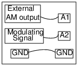

<h2 id="schematic">Schematic</h2>
<hr>
<p></p>
<ul>
<li>You require an external Amplitude modulated  signal to do this experiment.</li>
<li>The program captures the data and it can also show the power spectrum.
the side bands will be visible in the spectrum of an AM input.</li>
</ul>